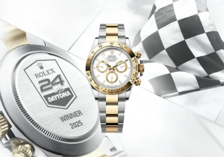
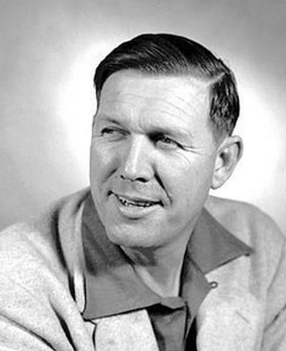
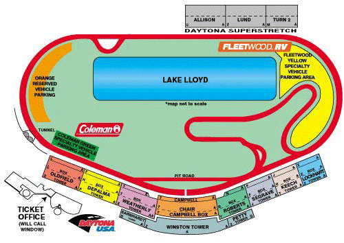

The 24 hour race we all know and love started in 1962 as a 3 hour race. with the popularity of Le Mans it was evolved to become endurance race in 1966. This race went through various names when Rolex swoops in and snatches the title sponsor in 1992. With Rolex owning the title sponsor, they award each winner "the Cosmograph" or now know as "The Daytona" which evolves and changes with every win, drivers wear it like a mini trophy, reminding them of what they accomplished. Some drivers even poke fun and claim "it's all about the watch".
Daytona International Speedway began in 1953 when Bill France Sr. put a proposal forward to construct a permanent speedway. He had realized that racing on Daytona beach was not good in the long term. So on August 16th, 1954 he signed a contact with the City of Daytona Beach and Volusia County officals to build the international speedway, soon to be loving nicknamed the "World Center of Racing". The first Daytona 500 took place on Febuary 22, 1959 with a crowd of 41,000. it quickly became "the place to be" for any and all things racing, including NASCAR, motorcycles, and others.
The Daytona Internaltional Speedway is a 480-acre compex, with a 2.5 high-banked tri-oval track with 31 degree turns. this facillity sits over 100,000 guests, along with various other things like garages, restaurants and different track layouts. this track is used for more than just high-speed racing, it's continusly being used for concerts, civic and social gatherings, car shows, photo shoots, production vehicle testing, police motorcycle training, as well as track tours.
to learn more about the cars and their specifics: